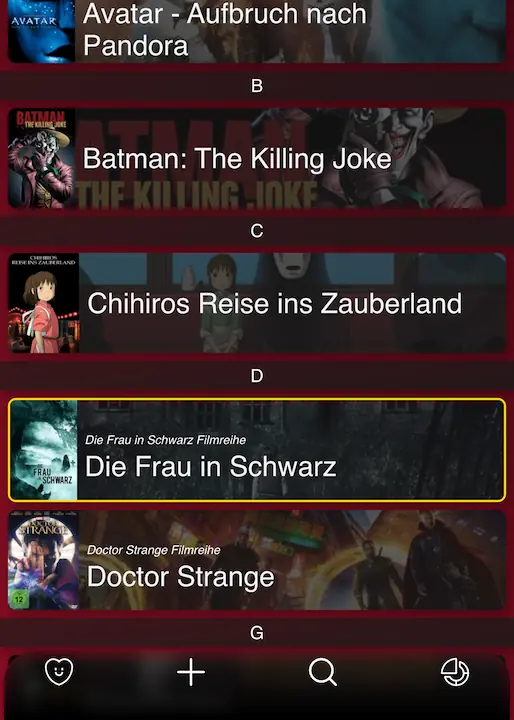

Hier sind einige meiner Projekte. Ältere Projekte dieser Liste werden nicht mehr weiterentwickelt.
Automatisiertes Dokumentationstool.
Die Bibliothek
Die App ist eine installierbare PWA. Offlinebetrieb sowie automatische Updates funktionieren problemlos. Die letzten Dokumente werden automatisch in der IndexedDB des Browsers gespeichert und können über ein Menü aufgerufen werden.
Das fertige Dokument wird dann mit der
Simples und effizientes Web Frontend Framework.
Subpage-Router, Templates, (Data-Binding ist aktuell in Arbeit).
Es wird kein spezieller Webserver benötigt, da alles clientseitig ausgeführt wird. Das Framework besteht aus einer JavaScript Runtime (auch einzeln lauffähig) und einem CLI-Tool, welches Unterseiten und Templates vorrendert, damit Suchmaschinen den Inhalt sehen und die Seite im Browser noch schneller lädt. Es ist keine Serverseitige Logik vorgesehen.
Wenn das CLI-Tool verwendet wird, funktioniert die Seite auch ohne JavaScript. Ein Bundler (wie Parcel) muss vor dem CLI-Tool ausgeführt werden. Auch eine robots.txt und sitemap.xml werden automatisch erstellt, falls nicht schon vorhanden.
Kompatibel mit jedem HTML5 fähigem Browser (mit eingeschränkter Funktionalität auch ohne JavaScript)!
Webseite für einen Minecraft Server
Community-, Server- und Karteninformationen über verschiedene APIs und Server Plugins.

DVD und Blu-ray Verwaltungsapp
Machine learning basierte Film-Empfehlungen. Automatische App Updates auf Android. Daten werden über eine geschützte Datenbank mittels Account synchronisieren.
Filmdaten kommen von der öffentlichen API
Dieses Projekt ist seit 2020 nicht mehr aktiv.
